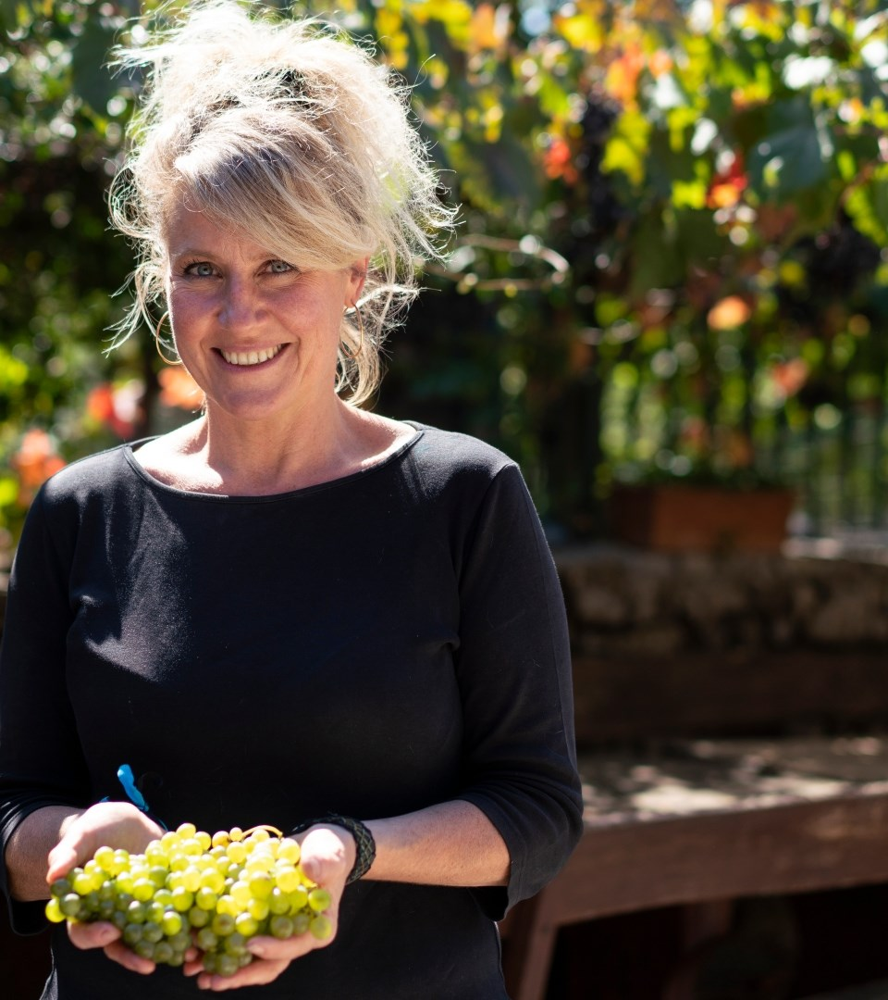

Radici profonde
Dove la nostra storia incontra la terra
Tra i paesaggi del Carso, a Samatorza, la storia di Colja è fatta di terra, famiglia e tradizioni custodite nel tempo. Qui ogni stagione lascia il proprio segno e racconta un territorio dal carattere unico.
L’agriturismo nasce dal desiderio di condividere questa autenticità con chi arriva, attraverso un’ospitalità sincera, i sapori del territorio e quei piccoli momenti che trasformano una visita in un ricordo.
La famiglia, la terra
Dal vigneto all’ospitalità.
Circa 3,5 ettari tra proprietà e affitto, una cantina su due livelli sotterranei e tre camere per accogliere chi vuole conoscere il Carso da vicino.